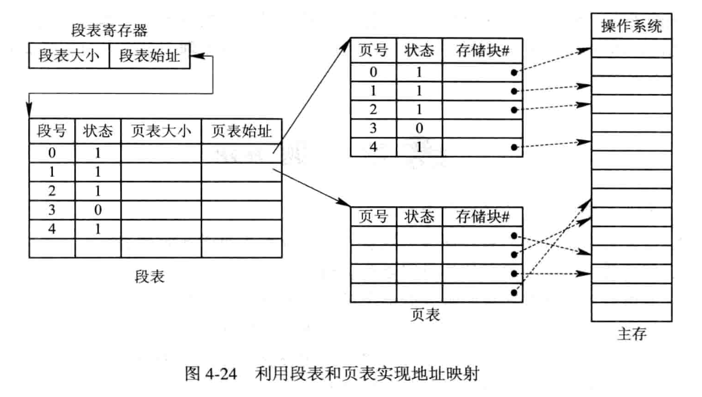
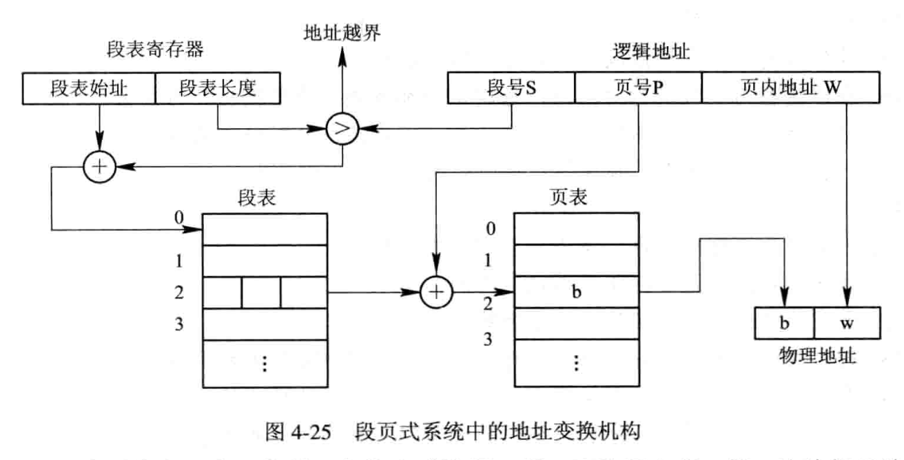

计算机操作系统 [operating-system][edit]
计算机操作系统 [operating-system][edit]
并发执行的问题引出了进程的概念. 进程 [Process] 是一个具有一定独立功能的程序关于某个数据集合的一次运行活动, 是系统进行 资源分配和调度 的一个独立单位. 由于多个进程在并发执⾏时共享系统资源, 致使它们在运⾏过程中呈现间断性的运⾏规律, 所以进程在其⽣命周期内可能具有多种状态.⼀般⽽⾔, 每⼀个进程⾄少应处于以下三种基本状态之⼀: 就绪 [Ready] 状态. 这是指进程已处于准备好运⾏的状态, 即进程已分配到除 CPU以外的所有必要资源后, 只要再获得 CPU, 便可⽴即执⾏. 如果系统中有许多处于就绪状态的进程, 通常将它们按⼀定的策略 (如优先级策略) 排成⼀个队列, 称该队列为就绪队列. 执⾏ [Running] 状态. 这是指进程已获得 CPU, 其程序正在执⾏的状态. 对任何⼀个时刻⽽⾔, 在单处理机系统中, 只有⼀个进程处于执⾏状态,⽽在多处理机系统中, 则有多个进程处于执⾏状态. 阻塞 [Block] 状态. 这是指正在执⾏的进程由于发⽣某事件 (如 内中断 (异常、例外、陷入) 外中断 (也称中断) 异常会引起中断, 中断未必是异常引起的. $\textbf{Remark.}$ 内中断也叫异常 / 陷入 / 例外. $\textbf{Remark.}$ 进程控制的目的是实现进程的状态转换. 在执行次序上进行协调 $\textbf{Remark.}$ 临界资源 [Critical Resource] 指任一个时间只允许一个进程使用的资源. $\textbf{Remark.}$ 临界区 [Critical Section] 指每个进程中访问临界资源的那段代码. 空闲让进. 当无进程处于临界区时, 表明临界资源处于空闲状态, 应允许一个请求进入临界区的进程立即进入自己的临界区, 以有效地利用临界资源. 忙则等待. 当已有进程进入临界区时, 表明临界资源正在被访问, 因而其它试图进入临界区的进程必须等待, 以保证对临界资源的互斥访问. 有限等待. 对要求访问临界资源的进程, 应保证在有限时间内能进入自己的临界区, 以免陷入“死等”状态. 让权等待. 当进程不能进入自己的临界区时, 应立即释放处理机, 以免进程陷入“忙等”状态. 1965 年, 荷兰学者 Dijkstra 提出的信号量 [Semaphores] 机制是⼀种卓有成效的进程同步⼯具. 在长期且⼴泛的应⽤中, 信号量机制又得到了很⼤的发展, 它从整型信号量经记录型信号量, 进⽽发展 “信号量集” 机制. 现在, 信号量机制已被⼴泛地应⽤于单处理机和多处理机系统以及计算机⽹络中. 信号量是一个特殊变量, 一般使用 $S$ 表示. 最初信号量 $S$ 是表示可用资源数目的整型变量. 除初始化外, 只能对 $S$ 做两个原子操作 $\textbf{Remark.}$ $P,V$ 操作是操作系统内核的一部分, 是原语. 整型信号量: 记录型信号量: 进程进入阻塞状态, 不会忙等. $\textbf{Remark.}$ 一般情况下, 互斥信号量的初值为 1 $\textbf{Remark.}$ 互斥信号量的取值范围 $\textbf{Remark.}$ 互斥信号量 $\textbf{Remark.}$ 同步信号量 总结: $\textbf{Example.}$ $\textbf{Example.}$ 公共汽车上有 1 名司机和 1 名售票员, 司机和售票员活动如下, 车辆运行规则是只有到站停车后售票员才能开门, 只有关门后司机才能启动车辆.初始状态是车辆停在起始站. 使用 P、V 原语描述车辆运行过程. 系统中有一组生产者进程和一组消费者进程, 生产者进程每次生产一个产品放入缓冲区, 消费者进程每次从缓冲区中取出一个产品并使用. 生产者、消费者共享一个初始为空、大小为 $n$ 的缓冲区. $\textbf{Remark.}$ 假如五位哲学家同时饥饿而各自拿起左边的筷子时，就会使五个信号量 chopstick 均为 解决方法: 至多只允许有四位哲学家同时去拿左边的筷子, 最终能保证至少有一位哲学家能够进餐, 并在用毕时能释放出他用过的两只筷子, 从而使更多的哲学家能够进餐. 仅当哲学家的左、右两只筷子均可用时, 才允许他拿起筷子进餐. 规定奇数号哲学家先拿他左边的筷子, 然后再去拿右边的筷子; 而偶数号哲学家则相反. 最后总会有一位哲学家能获得两只筷子而进餐. 即, 若干读者和一个写者互斥. 两类进程: 写进程、读进程. $\gdef\spaces#1{~ #1 ~}$
$\gdef\str#1{\footnotesize{#1}}$
$\gdef\hint#1{{\color{gray}{\str{#1}}}}$
$\gdef\type#1{~:~\texttt{#1}}$ 作业周转时间 $T =$ 后备队列等待调度时间 + 在就绪队列等待时间 + CPU上执行时间 + 等待 $$
\begin{aligned}
\hint{平均周转时间} ~ T &\spaces= \frac1n\sum_{n=1}^nT_i, \\
\hint{平均带权周转时间} ~ W &\spaces= \frac1n \sum_{n=1}^n \frac{T_i}{T_{S_i} ~ \hint{作业运行的时间}}
\end{aligned}
$$ 周转时间 $=$ 作业完成时间 $−$ 作业提交时间 (到达时间). $\gdef\spaces#1{~ #1 ~}$
$\gdef\str#1{\footnotesize{#1}}$
$\gdef\hint#1{{\color{gray}{\str{#1}}}}$
$\gdef\type#1{~:~\texttt{#1}}$ FCFS 是最简单的调度算法, 该算法既可⽤于作业调度, 也可⽤于进程调度. 当在作业调度中采⽤该算法时, 系统将按照作业到达的先后次序来进⾏调度, 或者说它是优先考虑在系统中等待时间最长的作业,⽽不管该作业所需执⾏时间的长短, 从后备作业队列中选择⼏个最先进⼊该队列的作业, 将它们调⼊内存, 为它们分配资源和创建进程. 然后把它放⼊就绪队列. 当在进程调度中采⽤ FCFS 算法时, 每次调度是从就绪的进程队列中选择⼀个最先进⼊该队列的进程, 为之分配处理机, 使之投⼊运⾏. 该进程⼀直运⾏到完成或发⽣某事件⽽阻塞后, 进程调度程序才将处理机分配给其它进程. 顺便说明, FCFS 算法在单处理机系统中已很少作为主调度算法, 但经常把它与其它调度算法相结合使⽤, 形成⼀种更为有效的调度算法. 例如, 可以在系统中按进程的优先级设置多个队列, 每个优先级⼀个队列, 其中每⼀个队列的调度都基于 FCFS 算法. $\textbf{Example.}$ 先来先服务 短作业优先算法 SJF 是以作业的长短来计算优先级, 作业越短, 其优先级越⾼. 作业的长短是以作业所要求的运⾏时间来衡量的. SJF 算法可以分别⽤于作业调度和进程调度. 在把短作业优先调度算法⽤于作业调度时, 它将从外存的作业后备队列中选择若⼲个估计运⾏时间最短的作业, 优先将它们调⼊内存运⾏. $\textbf{Example.}$ 短作业优先 在优先级调度算法中, 基于作业的紧迫程度, 由外部赋予作业相应的优先级, 调度算法是根据该优先级进⾏调度的. 这样就可以保证紧迫性作业优先运⾏.优先级调度算法可作为作业调度算法, 也可作为进程调度算法. 当把该算法⽤于作业调度时, 系统是从后备队列中选择若⼲个优先级最⾼的作业装⼊内存. $\textbf{Example.}$ 优先级调度 根据优先级是否可以动态改变，可将优先级分为静态优先级和动态优先级两种. $\gdef\spaces#1{~ #1 ~}$
$\gdef\str#1{\footnotesize{#1}}$
$\gdef\hint#1{{\color{gray}{\str{#1}}}}$
$\gdef\type#1{~:~\texttt{#1}}$ 在批处理系统中, FCFS 算法所考虑的只是作业的等待时间,⽽忽视了作业的运⾏时间.⽽ SJF 算法正好与之相反, 只考虑作业的运⾏时间,⽽忽视了作业的等待时间.⾼响应⽐优先调度算法则是既考虑了作业的等待时间, 又考虑作业运⾏时间的调度算法, 因此既照顾了短作业, 又不致使长作业的等待时间过长, 从⽽改善了处理机调度的性能. $$
\str{响应比} \spaces= \frac{\str{等待时间} + \str{要求服务时间} \hint{~~ = 响应时间}}{\str{要求服务时间}}
$$ $\textbf{Example.}$ $\textbf{Example.}$ 有 5 个批处理作业 (A、B、C、D、E) 几乎同时到达, 估计的运行时间分别为 2、4、6、8、10, 它们的优先级分别为 1、2、3、4、5 (1 为最低优先级). 对下面的每种调度算法, 分别计算作业的平均周转时间和平均带权周转时间. $\textbf{Solution.}$ ABCDE BCDE CDE DE E 产生死锁必须同时满足以下四个条件, 只要其中任一条件不成立, 死锁就不会发生. 互斥条件: 只有对必须互斥使用的资源的争抢才会导致死锁 (如: 哲学家的筷子、打印机设备). 像内存、扬声器这样可以同时让多个进程使用的资源是不会导致死锁的 (因为进程不用阻塞等待这种资源). 请求和保持条件: 进程已经保持了至少一个资源, 但又提出了新的资源请求, 而该资源又被其他进程占有, 此时请求进程被阻塞, 但又对自己已有的资源保持不放. 不剥夺条件: 进程所获得的资源在未使用完之前, 不能由其他进程强行夺走, 只能主动释放. 循环等待条件: 存在一种进程资源的循环等待链, 链中的每一个进程已获得的资源同时被下一个进程所请求, 即成环. 发生死锁时一定有循环等待, 但是发生循环等待时未必死锁 (循环等待是死锁的必要不充分条件). 如果同类资源数大于 1, 则即使有循环等待, 也未必发生死锁. 但如果系统中每类资源都只有一个, 那循环等待就是死锁的充分必要条件了. 打破四个条件之一. 把只能互斥使用的资源改造成允许共享使用, 则系统不会进入死锁状态. 如 SPOOLing 技术. 操作系统可以采用 SPOOLing 技术把独占设备在逻辑上改造成共享设备. 比如用 SPOOLing 技术将打印机改造成共享设备. 破坏不剥夺条件: 方案一: 当某个进程请求新的资源得不到满足时, 它必须立即释放保持的所有资源, 待以后需要时再重新申请. 也就是说, 即使某些资源尚未使用完, 也需要主动释放, 从而破坏了不可剥夺条件. 方案二: 当某个进程需要的资源被其他进程所占有的时候, 可以由操作系统协助, 将想要的资源强行剥夺. 这种方式一般需要考虑各进程的优先级 (比如: 剥夺调度方式, 就是将处理机资源强行剥夺给优先级更高的进程使用). 该策略的缺点: 实现起来比较复杂. 释放已获得的资源可能造成前一阶段工作的失效. 因此这种方法一般只适用于易保存和恢复状态的资源, 如 CPU.反复地申请和释放资源会增加系统开销, 降低系统吞吐量.若采用方案一, 意味着只要暂时得不到某个资源, 之前获得的那些资源都需要放弃, 以后再重新申请. 如果一直发生这样的情况, 就会导致进程饥饿. 破坏循环等待条件 可采用顺序资源分配法. 首先给系统中的资源编号, 规定每个进程必须按编号递增的顺序请求资源, 同类资源 (即编号相同的资源) 一次申请完. 该策略的缺点: 不方便增加新的设备, 因为可能需要重新分配所有的编号. 进程实际使用资源的顺序可能和编号递增顺序不一致, 会导致资源浪费. 必须按规定次序申请资源, 用户编程麻烦. 预防死锁. 这是一种较简单和直观的事先预防方法. 该方法是通过设置某些限制条件, 去破坏产生死锁四个必要条件中的一个或几个来预防产生死锁. 预防死锁是一种较易实现的方法, 已被广泛使用. 避免死锁. 同样是属于事先预防策略, 但它并不是事先采取各种限制措施, 去破坏产生死锁的四个必要条件, 而是在资源的动态分配过程中, 用 某种方法 防止系统进入不安全状态, 从而可以避免发生死锁. 检测死锁. 这种方法无须事先采取任何限制性措施, 允许进程在运行过程中发生死锁. 但可通过检测机构及时地检测出死锁的发生, 然后采取适当的措施, 把进程从死锁中解脱出来. 解除死锁. 当检测到系统中已发生死锁时, 就采取相应措施, 将进程从死锁状态中解脱出来. 常用的方法是撤消一些进程, 回收它们的资源, 将它们分配给已处于阻塞状态的进程, 使其能继续运行. 在进程提出资源申请时, 先预判此次分配是否会导致系统进入不安全状态. 如果会进入不安全状态, 就暂时不答应这次请求, 让该进程先阻塞等待. 算法步骤: 安全性算法步骤: $\textbf{Example.}$ 由所进行的安全性检查得知, 可以找到一个安全序列 $P_1, P_3, P_4, P_2, P_0$. 因此, 系统是安全的, 可以立即将 $P_1$ 所申请的资源分配给它. $P_4$ 请求资源: $P_4$ 发出请求向量 $\text{Request}_4(3, 3,0)$, 系统按银行家算法进行检查: $P_0$ 请求资源: $P_0$ 发出请求向量 $\text{Request}_0(0,2,0)$, 系统按银行家算法进行检查: 进行安全性检查: 可用资源 $\text{Available}(2, 1, 0)$ 已不能满足任何进程的需要, 故系统进入不安全状态, 此时系统不分配资源. 连续分配⽅式是最早出现的⼀种存储器分配⽅式, 曾被⼴泛应⽤于上世纪 60~80 年代的 OS 中, 该分配⽅式为⼀个⽤户程序分配⼀个连续的内存空间, 即程序中代码或数据的逻辑地址相邻, 体现在内存空间分配时物理地址的相邻. 连续分配⽅式可分为四类: 单⼀连续分配、 固定分区分配、 动态分区分配以及动态可重定位分区分配算法四种⽅式. 可以理解成 动态分区分配 的紧凑化版本. 用可变分区方式管理内存时, 假定内存中按地址顺序依次有 5 个空闲区, 大小为 32、 10、 5、 228、 100, 单位为 KB, 现有 5 个作业, 各需内存 11、 10、 108、 28、 115, 若采用首次适用分配算法能全部装入吗? 怎样才能装入? 因为失败的原因是缺乏大分区, 所以我们考虑最佳适应算法. 如下所示. $\gdef\str#1{{\footnotesize #1}}$
$\gdef\hint#1{{\color{gray}{\str{#1}}}}$ 在该⽅式中, 将 ⽤户程序的地址空间 分为若⼲个固定⼤⼩的区域, 称 “页” [page] 或 “页⾯”. 典型的页⾯⼤⼩为 1KB. 相应地, 也 将内存空间 分为若⼲个物理块 [block] 或页框 [frame], 页和块的⼤⼩相同. 这样可将⽤户程序的任⼀页放⼊任⼀物理块中, 实现了离散分配. $$
\hint{页号} ~ P = \bigg\lfloor \frac{\hint{逻辑地址} ~ A}{\hint{页⾯⼤⼩} ~ L} \bigg\rfloor, \quad
\hint{页内地址} ~ d = \hint{逻辑地址} ~ A \mod \hint{页⾯⼤⼩} ~ L
$$ $\textbf{Example.}$ 逻辑地址为 2500, 每页大小为 1KB, 页表如下. 求物理地址. $P = \lfloor \frac{2500}{1 ~\text{K}} \rfloor = 2, d = 2500 \mod 1 ~\text{KB} = 452$ $ \str{物理地址} = \hint{块号} ~ 8 \times \hint{页表长度} ~ 1 ~\text{K} + 452 = 8644$ $\textbf{Remark.}$ 为了提⾼地址变换速度, 可在地址变换机构中增设⼀个具有并⾏查寻能⼒的特⾼速缓冲寄存器, 又称为 “联想寄存器” [Associative Memory], 或称为 “快表”. $\gdef\str#1{{\footnotesize #1}}$
$\gdef\hint#1{{\color{gray}{\str{#1}}}}$ 这是为了满⾜⽤户要求⽽形成的⼀种存储管理⽅式. 它把⽤户程序的地址空间分为若⼲个⼤⼩不同的段, 每段可定义⼀组相对完整的信息. 在存储器分配时, 以段为单位, 这些段在内存中可以不相邻接, 所以也同样实现了离散分配. 作业的逻辑地址按照 逻辑意义 划分成段 段的长度由相应的逻辑信息组的长度决定, 因此各段的长度并不相等. 整个作业的地址空间由于被分成多个段, 所以呈现出⼆维特性, 亦即, 每个段既包含了⼀部分地址空间, 又标识了逻辑关系. 其逻辑地址由段号 (段名) 和段内地址所组成. 逻辑地址 $[\hint{段号} ~ a, \hint{段内地址} ~ f]$ 的物理地址是 $\hint{段号对应的基址} ~ b + \hint{段内地址} ~ f$. 若 $ \hint{段内地址} ~ f > \hint{段长} ~ \ell$, 则段长越界, 非法. 这是分页和分段两种存储管理⽅式相结合的产物. 它同时具有两者的优点, 是⽬前应⽤较⼴泛的⼀种存储管理⽅式. 分页系统以页⾯作为内存分配的基本单位, 能有效地提⾼内存利⽤率,⽽分段系统以段作为内存分配的基本单位, 它能够更好地满⾜⽤户多⽅⾯的需要. 如果能对两种存储管理⽅式 “各取所长”, 则可形成⼀种新的存储器管理⽅式—段页式存储管理⽅式. 这种新的系统既具有分段系统的便于实现、 分段可共享、 易于保护、 可动态链接等⼀系列优点,又能像分页系统那样, 很好地解决内存的外部碎⽚问题. 段页式系统的基本原理是分段和分页原理的结合, 即 先将⽤户程序分成若⼲个段, 再把每个段分成若⼲个页, 并为每⼀个段赋予⼀个段名.  在段页式系统中, 为了实现从逻辑地址到物理地址的变换, 系统中需要同时配置段表和页表. 段表的内容与分段系统略有不同, 它不再是内存始址和段长, 而是页表始址和页表长度. 上图示出了利用段表和页表进行从用户地址空间到物理 (内存) 空间的映射.  分页和分段的相同点: 分页和分段的不同点: 各种 存储器管理 ⽅式有⼀个共同的特点, 即它们都要求将⼀个作业全部装⼊内存后⽅能运⾏. 于是, 出现了下⾯这样两种情况: 出现上述两种情况的原因都是由于内存容量不够⼤. ⼀个显⽽易见的解决⽅法是从物理上增加内存容量, 但这往往会受到机器⾃⾝的限制, ⽽且⽆疑要增加系统成本, 因此这种⽅法是受到⼀定限制的. 另⼀种⽅法是从逻辑上扩充内存容量, 这正是虚拟存储技术所要解决的主要问题. 传统存储器管理⽅式 全都具有如下两个共同的特征: 由此可以看出, 上述的⼀次性及驻留性特征使得许多在程序运⾏中不⽤或暂时不⽤的程序 (数据) 占据了⼤量的内存空间,⽽⼀些需要运⾏的作业又⽆法装⼊运⾏, 显然, 这是在浪费宝贵的内存资源. 现在要研究的问题是: ⼀次性及驻留性特征是否是程序在运⾏时所必需的和不可改变的. 当⽤户看到⾃⼰的程序能在系统中正常运⾏时, 他会认为, 该系统所具有的内存容量⼀定⽐⾃⼰的程序⼤, 或者说,⽤户所感觉到的内存容量会⽐实际内存容量⼤得多. 但⽤户所看到的⼤容量只是⼀种错觉, 是虚的, 故⼈们把这样的存储器称为虚拟存储器. 综上所述, 所谓虚拟存储器, 是指具有 请求调⼊功能 和 置换功能, 能 从逻辑上对内存容量加以扩充 的⼀种存储器系统. 其 逻辑容量由内存容量和外存容量之和 所决定, 其运⾏速度接近于内存速度, ⽽每位的成本却又接近于外存. 可见, 虚拟存储技术是⼀种性能⾮常优越的存储器管理技术, 故被⼴泛地应⽤于⼤、 中、⼩型机器和微型机中. 请求分页系统 和 请求分段系统 是在 分页系统 和 分段系统 的基础上, 增加了请求调页 / 调段及分段置换功能后所形成的页式 / 段式虚拟存储系统. 在进程运⾏过程中, 若其所要访问的页⾯不在内存, ⽽需把它们调⼊内存, 但内存已⽆空闲空间时, 为了保证该进程能正常运⾏, 系统必须从内存中调出⼀页程序或数据送到磁盘的对换区中. 但应将哪个页⾯调出, 须根据⼀定的算法来确定. 通常, 把选择换出页⾯的算法称为 页⾯置换算法 [Page-Replacement Algorithms]. 置换算法的好坏将直接影响到系统的性能. 最佳置换算法 和 先进先出置换算法 是两种⽐较极端的算法. 最佳置换算法 是⼀种理想化的算法, 它具有最好的性能, 但实际上是⽆法实现的. 通常使⽤ 最佳置换算法 作为标准, 来评价其它算法的优劣. 先进先出置换算法 是最直观的算法, 由于与通常页⾯的使⽤规律不符, 可能是性能最差的算法, 故实际应⽤极少. FIFO 算法是最早出现的置换算法. 该算法总是淘汰最先进⼊内存的页⾯, 即选择在内存中驻留时间最久的页⾯予以淘汰. 该算法实现简单, 只需把⼀个进程已调⼊内存的页⾯按先后次序链接成⼀个队列, 并设置⼀个指针, 称为替换指针, 使它总是指向最⽼的页⾯. 但该算法与进程实际运⾏的规律不相适应, 因为在进程中, 有些页⾯经常被访问, ⽐如, 含有全局变量、常⽤函数、例程等的页⾯, FIFO 算法并不能保证这些页⾯不被淘汰. 在采⽤最少使⽤置换算法 LFU 算法时, 应为在内存中的每个页⾯设置⼀个移位寄存器, ⽤来记录该页⾯被访问的频率. 该置换算法选择 在最近时期使⽤最少的页⾯作为淘汰页. 由于存储器具有较⾼的访向速度, 例如 100ns, 在 1ms 时间内可能对某页⾯连续访问成千上万次, 因此,直接利⽤计数器来记录某页被访问的次数是不现实的, 只能采⽤较⼤的时间间隔来记录对存储器某页的访问. 在最少使⽤置换算法中采⽤了移位寄存器⽅式. 每次访问某页时, 便将该移位寄存器的最⾼位置 1, 再每隔⼀定时间 (例如 100ms) 右移⼀次. 这样, 在最近⼀段时间使⽤最少的页⾯将是 $\sum_i R_i$ 最⼩的页. 针对应试, 我们总结 最佳置换 OPT, 先进先出置换 FIFO, 最近最久未使用 LRU 的操作流程. 所有页⾯置换算法操作都是先把页面数 $n$ 填满, 此时必定发生 $n$ 次中断, 内存中的页面序列记为 $S$. 最佳置换 OPT: 最佳假设了知道未来页面的访问情况, 即走向. 因此所要做的策略是, 如果所要访问的页⾯ $p$ 不在内存 $S$. 则将 $S$ 中的 $n$ 个页面按序与未来的页面序列 $T$ 比较, 选择第一次出现但是最远的 $q \in S, q \in T$, 替换 $q$ 为 $p$. 先进先出置换 FIFO: FIFO 与 OPT 完全相反, 其替换过去访问且在 $S$ 中的最远的 $q$ 为所要访问的页⾯ $p$. 最近最久未使用 LRU: 选择最近最久未使⽤的页⾯ $q$ 予以淘汰 $q \to p$, 即 $S$ 序列完整出现在过去访问的第一个页面 $q$.进程 [进程][edit]
进程控制块 PCB [进程控制块][edit]
PCB 的构成
PCB 的组织方式
七态模型及调度 [七态模型及调度][edit]

I/O 请求、 申请缓冲区失败等) 暂时⽆法继续执⾏时的状态, 亦即进程的执⾏受到阻塞. 此时引起进程调度, OS 把处理机分配给另⼀个就绪进程,⽽让受阻进程处于暂停状态,⼀般将这种暂停状态称为阻塞状态, 有时也称为等待状态或封锁状态. 通常系统将处于阻塞状态的进程也排成⼀队列, 称该队列为阻塞队列. 实际上, 在较⼤的系统中, 为了减少队列操作的开销, 提⾼系统效率, 根据阻塞原因的不同, 会设置多个阻塞队列.挂起原因
中断和异常 [中断和异常][edit]
中断的作用
中断的类型
内核 [内核][edit]
内核的支撑功能
内中断的三种情况
内核的支撑功能
进程同步机制 [进程同步机制][edit]
进程间的相互关系
竞争关系 [Competition]
协作关系 [Collaboration]
进程同步机制
互斥的访问临界资源
访问过程
访问临界资源的循环进程
临界区准则
信号量机制 [信号量机制][edit]
wait].signal]....
wait(S); // 进入区, 申请打印机
访问共享资源; // 临界区, 访问打印机
signal(S); // 退出区, 释放打印机
...
// 整型信号量, 表示可用资源数
int S = 1;
// wait 原语, 相当于进入区
void wait(int S) {
// 资源不够, 循环等待
while (S <= 0);
S = S - 1;
}
// signal 原语, 相当于退出区
void signal(int S) {
S = S + 1;
}
// 记录型信号量定义
typedef struct {
int value; // 剩余资源数量
struct process *L; // PCB List, 进程等待队列
} semaphore;
void wait(semaphore S) {
// 申请资源
S.value--;
if (S.value < 0) {
// bLock 原语阻塞进程
block(S.L);
}
}
void signal(semaphore S) {
// 释放资源
S.value++;
if (S.value <= 0) {
// wakeup 原语喚醒进程
wakeup(S.L);
}
}
(-1, 0, 1).
1: 两个进程都没有进入临界区.0: 一个进程进入临界区运行.-1: 一个进程正在临界区运行, 另一个因等待而阻塞在等待队列中.进程互斥
mutex, 初值为 1.进程同步
S, 初始为 0.
前驱关系
p1() { s1; V(a); V(b); }
p2() { p(a); s2; V(c); V(d); }
p3() { p(b); s3; V(e); }
p4() { p(c); s4; V(f); }
p5() { p(d); s5; V(g); }
p6() { p(e); p(f); p(g); s6; }
void main() {
semaphore a, b, c, d, e, f, g;
a.value = b.value = c.value = d.value = e.value = f.value = g.value = 0;
cobegin
p1(); p2(); p3(); p4(); p5(); p6();
coend
}
semaphore S1 = 1; // 车已停
semaphore S2 = 0; // 门已关
driver() {
while (1) {
P(S2);
启动车辆;
正常行驶;
到站停车;
V(S1);
}
}
seller() {
while (1) {
售票;
P(S1);
开车门;
关车门;
V(S2);
}
}
经典的进程同步问题 [经典的进程同步问题][edit]
生产者消费者问题
empty = N)full = 0)mutex)semaphore mutex = 1; // 缓冲区互斥信号量
semaphore empty = n; // 缓冲区空闲数量
semaphore full = 0; // 缓冲区物品数量
int in = 0, out = 0;
Process producer() {
while (1) {
produce an item nextp;
P(empty); // 请求缓冲区一个空位
P(mutex);
buffer[in] = nextp;
in = (in + 1) % n;
V(mutex);
V(full); // 缓冲区物品数量加一
}
}
Process consumer() {
while (1) {
P(full); // 请求缓冲区一个物品
P(mutex);
nextc = buffer[out];
out = (out + 1) % n;
V(mutex);
V(empty); // 缓冲区空位数量加一
consume the item in nextc;
}
}
void main() {
cobegin // 并发执行
producer();
consumer();
coend
}
哲学家进餐问题
semaphore chopstick[5] = {1, 1, 1, 1, 1}; // mutex
while (1) {
P(chopstick[i]);
P(chopstick[(i + 1) % 5]);
...
eat;
...
V(chopstick[i]);
V(chopstick[(i + 1) % 5]);
...
think;
...
}
0, 引起死锁.
利用AND信号量机制解决哲学家进餐问题 (解决方法 2)
semaphore chopstick[5] = {1, 1, 1, 1, 1};
void P(int i) {
while (1) {
Swait(chopstick[i], chopstick[(i + 1) % 5])
...
eat;
...
Ssignal(chopstick[i], chopstick[(i + 1) % 5]);
...
think;
...
}
}
void main() {
cobegin
for (int i = 0; i < 5; i++) P(i);
coend
}
读者–写者问题
semaphore wmutex = 1; // 是否有写者
semaphore rmutex = 1; // 是否在读
int readercount = 0;
void reader() {
while (1) {
P(rmutex);
readercount ++;
if (readercount == 1)
P(wmutex);
V(rmutex);
read;
P(rmutex);
readercount --;
if (readercount == 0)
V(wmutex);
V(rmutex);
}
}
void writer() {
while (1) {
P(wmutex);
write;
V(wmutex);
}
}
void main() {
cobegin
reader(); writer();
coend
}
总结
处理机调度与死锁 [处理机调度与死锁][edit]
处理机调度 [处理机调度][edit]
处理机调度策略准则 [处理机调度策略准则][edit]
用户准则
系统准则
I/O 操作完成时间.调度算法 [调度算法][edit]
先来先服务 [先来先服务][edit]
先来先服务 [FCFS, First Come First Served]
优缺点:
I/O 繁忙型作业 (进程).进程名 到达 服务 开始 完成 周转 带权周转 A $0$ $4$ $0$ $4$ $4$ $1$ B $1$ $3$ $4$ $7$ $6$ $2$ C $2$ $5$ $7$ $12$ $10$ $2$ D $3$ $2$ $12$ $14$ $11$ $\frac{11}2$ E $4$ $4$ $14$ $18$ $14$ $\frac{14}4$ 平均 $9$ $2.8$ 短作业优先 [短作业优先][edit]
短作业优先 [SJF, Shortest Job First]
优缺点:
进程名 到达 服务 开始 完成 周转 带权周转 A $0$ $4$ $0$ $4$ $4$ $1$ B $1$ $3$ $6$ $9$ $8$ $8/3$ C $2$ $5$ $13$ $18$ $16$ $16/5$ D $3$ $2$ $4$ $6$ $3$ $3/2$ E $4$ $4$ $9$ $13$ $9$ $9/4$ 平均 $8$ $2.1$ 优先级调度算法 [优先级调度算法][edit]
优先级调度 [PSA, Priority-Scheduling Algorithm]
两种类型
进程名 到达 服务 静态优先权 开始 完成 周转 带权周转 A $0$ $4$ $4$ $0$ $4$ $4$ $1$ B $1$ $3$ $2$ $8$ $11$ $10$ $10/3$ C $2$ $5$ $3$ $11$ $16$ $14$ $14/5$ D $3$ $2$ $5$ $16$ $18$ $15$ $15/2$ E $4$ $4$ $1$ $4$ $8$ $4$ $1$ 平均 $9.4$ $2.93$
高响应比优先 [高响应比优先][edit]
高响应比优先 [HRRN, Highest Response Ratio Next]
时间片轮转 [时间片轮转][edit]
时间片轮转 [RR, Round-Robin]
100ms). 若进程末在一个时间片内执行完, 则剥夺处理机, 将进程重新放到就绪队列队尾重新排队.进程名 到达 服务 开始 完成 周转 带权周转 A $0$ $4$ $0$ $15$ $15$ $15/4$ B $1$ $3$ $1$ $12$ $11$ $11/3$ C $2$ $5$ $2$ $18$ $16$ $16/5$ D $3$ $2$ $3$ $9$ $6$ $3$ E $4$ $4$ $4$ $17$ $13$ $13/4$ 平均 $12.2$ $3.373..$ Example. 调度算法 [调度算法-例][edit]
进程名 到达 服务 开始 完成 周转 带权周转 A $0$ $2$ $28$ $30$ $30$ $15$ B $0$ $4$ $14$ $18$ $18$ $9/2$ C $0$ $6$ $0$ $6$ $6$ $1$ D $0$ $8$ $6$ $14$ $14$ $7/4$ E $0$ $10$ $18$ $28$ $28$ $14/5$ 平均 $19.2$ $5.01$
进程名 到达 服务 开始 完成 周转 带权周转 A $0$ $2$ $0$ $2$ $2$ $1$ B $0$ $4$ $2$ $6$ $6$ $3/2$ C $0$ $6$ $6$ $12$ $12$ $2$ D $0$ $8$ $18$ $20$ $20$ $5/2$ E $0$ $10$ $20$ $30$ $30$ $3$ 平均 $14$ $2$
进程名 到达 服务 开始 完成 周转 带权周转 A $0$ $2$ $28$ $30$ $30$ $15$ B $0$ $4$ $24$ $28$ $28$ $7$ C $0$ $6$ $18$ $24$ $24$ $4$ D $0$ $8$ $10$ $18$ $18$ $9/4$ E $0$ $10$ $0$ $10$ $10$ $1$ 平均 $22$ $5.85$
进程名 到达 服务 开始 完成 周转 带权周转 A $0$ $2$ $0$ $2$ $2$ $1$ B $0$ $4$ $2$ $12$ $12$ $3$ C $0$ $6$ $4$ $20$ $20$ $3.3$ D $0$ $8$ $6$ $26$ $26$ $3.25$ E $0$ $10$ $8$ $30$ $30$ $3$ 平均 $18$ $2.72$ 死锁 [死锁][edit]
死锁产生的必要条件 [死锁产生的必要条件][edit]
死锁的处理策略 [死锁的处理策略][edit]
处理死锁的⽅法 [处理死锁的⽅法][edit]
银行家算法 [银行家算法][edit]
核心思想
记号 含义 Max每个客户最大贷款额度. Allocation每个客户已经贷款的额度. Need每个客户尚需贷款的额度. Available银行家还可用于贷款的额度. Work同 AvailableFinish是否结束 Max Allocation Need Available A B C A B C A B C A B C $P_0$ 7 5 3 0 1 0 7 4 3 3 3 2 $P_1$ 3 2 2 2 0 0 1 2 2 $P_2$ 9 0 2 3 0 2 6 0 0 $P_3$ 2 2 2 2 1 1 0 1 1 $P_4$ 4 3 3 0 0 2 4 3 1
Max Need Allocation Work + Available Finish A B C A B C A B C A B C $P_1$ 3 2 2 1 2 2 2 0 0 5 3 2 true $P_3$ 2 2 2 0 1 1 2 1 1 7 4 3 true $P_4$ 4 3 3 4 3 1 0 0 2 7 4 5 true $P_2$ 9 0 2 6 0 0 3 0 2 10 4 7 true $P_0$ 7 5 3 7 4 3 0 1 0 10 5 7 true
存储器管理 [存储器管理][edit]
存储器的层次结构 [存储器的层次结构][edit]
多级存储器结构 CPU 寄存器 寄存器 主存 高速缓存, 主存, 磁盘缓存 [ buffer]辅存 磁盘, 可移动存储介质
缓存 速度匹配 物理 高速缓存 CPU $\lrarr$ 主存 是 磁盘缓存 主存 $\lrarr$ 磁盘 否, 是主存的一部分区域 程序的装入和链接 [装入和链接][edit]
0 开始编址, 也称相对地址.装入方式 装入时机 地址变化 优点 缺点 环境 绝对装入⽅式 编程时 编译期 装入简单 依赖硬件结构 单道程序环境 可重定位装入⽅式 运行前 装入前静态重定位 不依赖硬件 必须有连续空间 多道程序环境 动态运⾏时的装入⽅式 运行中 运行时完成 不需要连续空间 OS 开销大 多道程序环境
链接方式 链接时机 优点 静态链接 事先进⾏链接, 不再拆开 稳定 装入时动态链接 装入内存时, 边装入边链接 便于修改和更新, 便于实现对⽬标模块的共享 运⾏时动态链接 对某些模块的链接推迟到程序执⾏时才进⾏ 加快程序的装入过程, 节省⼤量的内存空间 连续分配存储管理⽅式 [连续分配存储管理][edit]
动态可重定位分区分配 [动态可重定位分区][edit]
Example. 连续分配存储管理 [连续分配存储管理⽅式-例][edit]
请求队列 ⾸次适应算法 初始 32 10 5 228 100 11 21 10 5 228 100 10 11 10 5 228 100 108 11 10 5 120 100 28 11 10 5 92 100 115 失败 请求队列 最佳适应算法 初始 32 10 5 228 100 11 21 10 5 228 100 10 21 0 5 228 100 108 21 0 5 120 100 28 21 0 5 120 72 115 21 0 5 5 72 离散分配 [离散分配][edit]
分页存储管理⽅式 [分页存储管理⽅式][edit]
页号 块号 0 2 1 3 2 8 

基本分页存储管理的缺点: 将用户作业物理划分页
分段存储管理⽅式 [分段存储管理⽅式][edit]

段号 基址 段长 $n$ $b$ $\ell$ 段页式存储管理⽅式 [段页式存储管理⽅式][edit]
虚拟存储器 [虚拟存储器][edit]
常规存储器管理⽅式的特征 [常规存储器管理⽅式的特征][edit]
页⾯置换算法 [页⾯置换算法][edit]
先进先出置换算法 FIFO [先进先出置换算法][edit]

最少使用置换算法 LFU [最少使用置换算法][edit]
页⾯置换算法操作 [页⾯置换算法操作][edit]